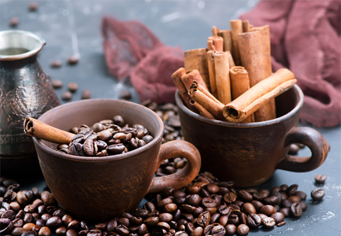

Что полезнее - чашка кофе или какао?
 Конечно же, какао-бобы лучше, какие могут быть сомнения. Порошок – это уже переработанный продукт, в который много чего добавлено – почитайте на этикетке. К тому же, для переработки может браться не особо качественное сырье. Так что покупайте лучше натуральные продукты!Какао-бобы – отличный продукт, который может поднять вам настроение с самого утра. И тогда и учеба, и работа не будут в тягость, день начнется легко и приятно. А все потому, что какао-бобы имеют богатейший химический состав, они способны подарить энергию и радость в чистом виде.
Какао-бобы содержат свыше 300 полезных для человека веществ. А что же именно помогает нам бороться с депрессией и поднимает настроение с утра? Это серотонин, триптофан и фенилэтиламин.
Сравним, что лучше употреблять с утра, кофе или какао? Кофе, безусловно, бодрит. Но кофе дает нервное возбуждение, которое граничит с состоянием беспокойства и тревоги. А вот какао действует на организм намного мягче, в то же время у него более длительное воздействие. Оно начинает влиять на настроение и состояние организма уже через пару минут, и это действие продолжается до 2 часов.
Как готовить какао-бобы?
Первый способ приготовления какао-бобов – это… вообще их не готовить. Жуйте бобы сырыми, и так вы получите от них максимальную пользу. Несколько зерен с утра будет достаточно.
Второй способ использовать какао-бобы - окунуть их в мед. Это вкусный и полезный завтрак-перекус.
Третий способ – сварить горячий шоколад из какао-бобов или «Волшебный Чоколатль». Нужно бросить в кофемолку горсть бобов, немного какао-масла, сахар (мед) и специи – корицу, гвоздику. В ковш, стоящий на малом огне высыпать смесь, потихоньку нагревать, помешивая и подливая кипяточку из чайника. Смесь должна расплавиться, запузыриться, но кипятить ее не надо – иначе пропадут полезные вещества. Густоту напитка выбирайте сами, экспериментируйте. Готовый напиток можно взбить.
А еще можно посыпать какао-стружкой, полученной в кофемолке, мороженое и десерты. Очень вкусно и невероятно полезно!
Какао-бобы для красоты
А еще из молотых какао-бобов (лучше вместе с кожурой) получается отличная основа для скраба и масок. В кожуре содержатся биологически активные вещества, которые омолаживают кожу.
А еще какао-бобы помогают бороться с целлюлитом. Нужно смешать 4 ст.л. молотых бобов с 1 ст.л. меда и 2 ст.л. воды. После душа, когда кожа распарена, втирайте эту смесь в проблемные зоны. Достаточно 5-7- минут, и ваша кожа словно помолодеет, станет более гладкой и упругой.